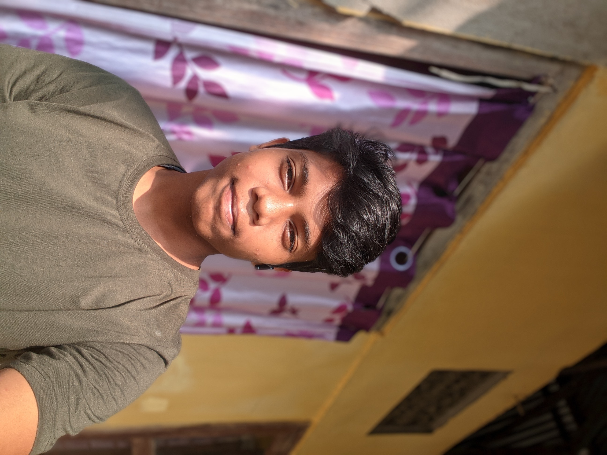
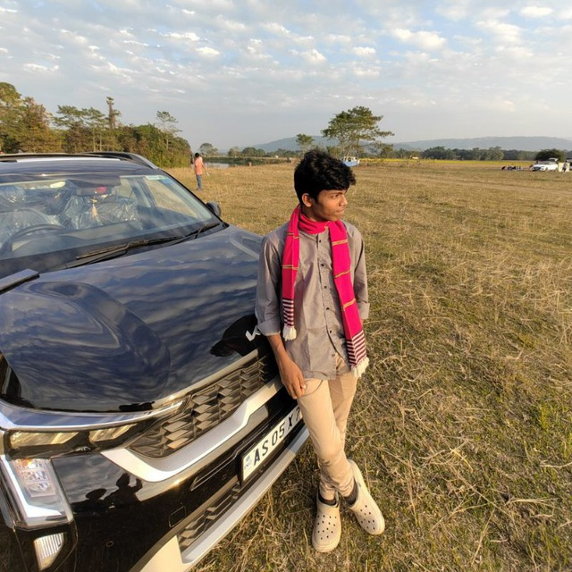

Tuku
Professional Programmer & Gamer

Biography
Full Name: Tuku
Date of Birth: January 17, 2009
Place of Birth: Kohora Hospital, Golaghat District, Assam
Tuku is a highly skilled programmer and a Minecraft gamer, known for his passion for coding and website development. He spends most of his time improving his programming skills and working on various projects.
Education
School: Kaziranga High School
Tuku is currently a student at Kaziranga High School and is preparing for his HSLC exam.
Skills
- Web Development (HTML, CSS, JavaScript, Python)
- Programming (Python, Bot Development)
- Minecraft Gaming
- Building and Designing Websites
- Professional in Coding

Social Media
YouTube: @tukuexe
Instagram: @tuku.exe
GitHub: @tukuexe
Twitter: @tukuexe